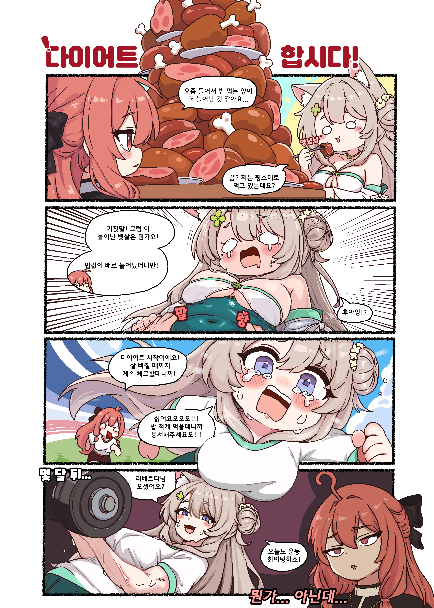

지인 작가 및 어시 도움 받으면서 공부 계속 하고 있고요...
애초에 러프및 원본PSD파일을 회사에서 검수하는데요....
채색은 제가 시도해보는것도 있고 새로 어시님 구해서 어시님한테 맡기는 경우가 대부분입니다

최근들어서 퀄리티 좋아진것도 어시님 도움이 큽니다, 이상한 부분 자주 잡아주시고 채색도 도움받아 부끄럽지만 최근 올라오는 그림들 전부가 제 실력이 이라곤 생각하지 않습니다. 어시님 없으면 이게 제 실력 최대치라 생각합니다.
이상한 부분 보이는건 걍 제 실력이슈임...ㅇㅇ....
https://www.dogdrip.net/733745711
댓글에서 AI관련 이야기가 나와 짧게 글 써봅니다
댓글
수집 당시 댓글 41개
어벤타허니잼 · 6 시간 전
서울은핑거스냅이필요해 · 6 시간 전
온갖 음해에 시달렸습니다!
· 이직마려운디자이너 · 1 시간 전
ㅇㄱㄸ
김페파 · 6 시간 전
사람하나 조지는건 그냥 한줄 찍 싸면 간단하네 진짜..
당사자는 몇곱절 더 노력해야 풀고
Ang마사냥꾼 · 5 시간 전
왜안써요
러프 슥슥해서 넘기고 결과물 수정만하면 5시간걸릴거 20분만에 뚝딱인데
· 민트초코갈비찜 · 47 분 전
사람들은 AI 안쓰는걸 선호하자너
바람안분다 · 5 시간 전
요즘 시대에 ai소리 들으면 그냥 칭찬이라고 생각합시다
워낙 개좆같은 놈들이 많아서리..
알칼리 · 5 시간 전
왜 이렇게 족고수 됐음 이쁘고 꼴려서 참기 힘드네 후
6월9일이생일임 · 4 시간 전
리오 개꼴리게 잘 그렸더라
리프젤리삐 · 4 시간 전
개의레시피 · 4 시간 전
갑자기 코미케가면 보이는 템플릿 그림이 되버렸군
전산실김씨 · 4 시간 전
ai도 프롬포트 입력하면 저렇게나옴 ㅋ
· ㄴㅌㄹ · 4 시간 전
참 못됐다
· 마리댕댕이 · 3 시간 전
· 만년필 · 3 시간 전
혹시 가정교육을 독학하셨는지요?
· QR코드 · 2 시간 전
헛소리할꺼면 단어나 제대로 알고 해라... prompt를 어떻게 읽으면 프롬포트가 되냐
· 비타민씨 · 1 시간 전
프로엠프티
· 개똥말똥소똥 · 51 분 전
프롬프트 뭘 입력해야 나오는지 알려줘
마리댕댕이 · 3 시간 전
지피티나 제미나이로 그림 몇 번 뽑아봤다고 자신이 AI판별 전문가인 줄 아는 바보같은 사람들 많아지긴했음
· QR코드 · 2 시간 전
ㄹㅇ... 영상도 좀 신박한 영상 올라오기만하면 "AI네~늙크크들은 구분못할듯" 엣헴들 많아짐. 아무리봐도 아닌거같아서 자세히 설명해달라고 물어보면 딱히 말을 제대로 못하는 애들이 대부분이더라
· 1232423 · 22 분 전
그걸 본인이 유세 떨만한 일이라고 생각하는 것도 존나 짜치고 한 편으로는 짠함.
쓰레기는쓰레기통에 · 3 시간 전
근데 작업 보조로는 좀 쓰는게 안낫나 전통방식으로 오래하면 손목돌아간다...
냐뀨 · 2 시간 전
항상응원해요!
ers133 · 2 시간 전
내가 족토 그림보고 그림체 꼴린다는 생각이 들다니 굴욕이다
무메이하트콘 · 2 시간 전
아아 해냈구나 족토
QR코드 · 2 시간 전
개병신같은 어그로 찐따들 무시하시고 계속 좋은 그림들 올려줍쇼, 볼때마다 귀엽고 더 발전해서 보기조와용
외화벌이꾼 · 2 시간 전
응원한다
불타는청춘 · 2 시간 전
리오 위즈유니폼은 좋았다... kt 위성횡령즈 ㄷㄷ
그웬스테이시 · 2 시간 전
정품추
lIIlIIlIIllllIl · 2 시간 전
ai 쓴다고 놀리면 그림이 나온다는거지?
일단 개추
노오루야캐욧 · 2 시간 전
자연지능추
년전통할매국밥 · 1 시간 전
비빔교자 · 1 시간 전
난 지금 그림도 좋아. 짐승냄새도 남아있는것 같음
에스파시아 · 1 시간 전
ai 구분못하는 틀딱 할배들이 늘어나서 그럼
110110110 · 57 분 전
짤쟁이 음해당하는건 일상임
그거 다 반응해주면 멘헤라옴
개똥말똥소똥 · 53 분 전
이사람이 족토임?
BigJay · 50 분 전
어시 ai네
왜용 · 27 분 전
벽을 넘었구나
너랑내IQ를합치면300 · 25 분 전
그야말로 인간승리 인 것 wwww
TPさくら · 23 분 전
정품이네...
사촌간불알빨기 · 8 분 전
그러니까 ai같다고 계속 놀리면 보추게이퍼리짤을 그려온다 이거지?